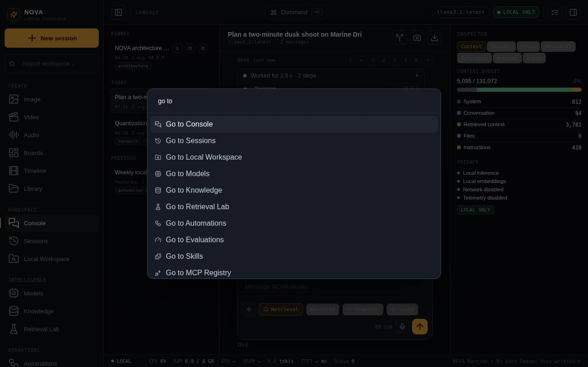
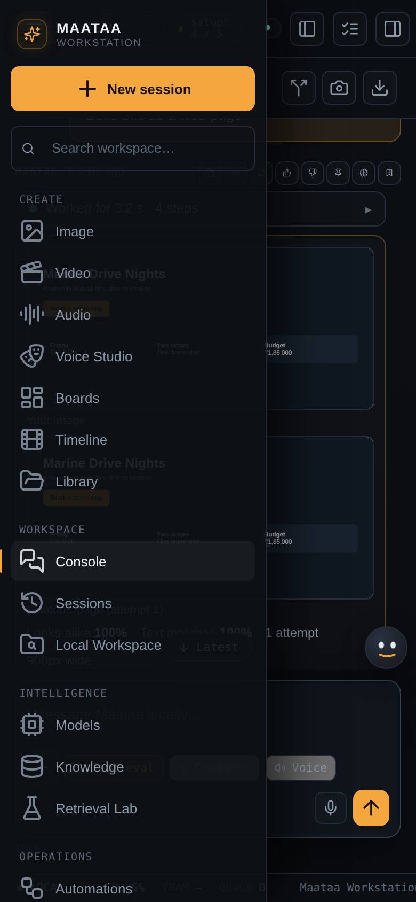

A tour of the interface
The sidebar, top bar, command palette, inspector, status bar, per-screen help, list tools, and using Maataa in a narrow window or on a phone.
The sidebar
The sidebar on the left lists every screen, grouped by purpose. The button at the top left of the top bar folds it to icons. New session starts a conversation, and the search box filters your sessions list.
The top bar
- Command (⌘K) opens the command palette: type part of a screen or action ("agents", "diagnostics", "new session") and press Enter.
- The model pill shows the model new messages use. Click it to change model.
- The privacy pill reads LOCAL ONLY while network access is off and the model runs locally, and changes when that is no longer true.
- The setup pill (for example setup: 3 / 5) shows how many of the five setup steps are done. Click it to see what is left.
- The Workbench strip (for example 0 · 0 · 0 · kill: clear · 0) counts queued jobs, running jobs, items waiting for you, the kill switch and finished jobs. Hover for the words, click to open Workbench.
- The last button opens or closes the inspector on the right of the Console.

The inspector
In the Console, the inspector shows what went into the last answer: Context (how the prompt budget was spent), Sources (retrieved passages), Files, Retrieval, Inference settings, Runtime and Trace. In narrower windows it slides over the conversation; close it with ×.
The status bar
The strip at the bottom shows whether Maataa is local, CPU and memory use, GPU and VRAM where macOS reports them, the last generation speed (tokens per second), time to first token and how many jobs are queued.
Help on every screen
- The helper in the bottom right corner answers questions about the screen you are on, by text or voice, and walks you through tasks step by step. See The helper.
- The ? next to a screen's title opens a short explanation on the right, with Read the full guide to open the matching article in Help & Support.
- Some panels have their own ? (Media's video, audio, filter and library panels).
- Help & Support in the System group has every guide, the FAQ, troubleshooting and the support report.
Search, filter and sort
Every longer list (skills, sessions, models, documents, media, history, agents, tool servers) has a search box, a tag filter built from its badges (installed, running, failed…) and a sort. Maataa remembers your choices for each list.
Narrow windows and phones
Maataa adapts to the window:
- Below about 1,180 pixels wide the Console's inspector becomes a drawer.
- Below about 820 pixels wide (a small window, or a phone opening
http://<your-mac>:8787through a tunnel you set up yourself) the sidebar becomes a menu: press ☰ at the top left to open it, and it closes when you pick a screen. The sessions list opens from the button at the top right.
